征战淘汰赛
第一场
对战华北科技学院
第一局
我们的对手是华北科技学院
开局，我方延续以往的战术
无人机起飞，给我们提供视野
但是很可惜
我方哨兵被对方英雄击杀
我方瞬间处于劣势
最后输掉了第一局
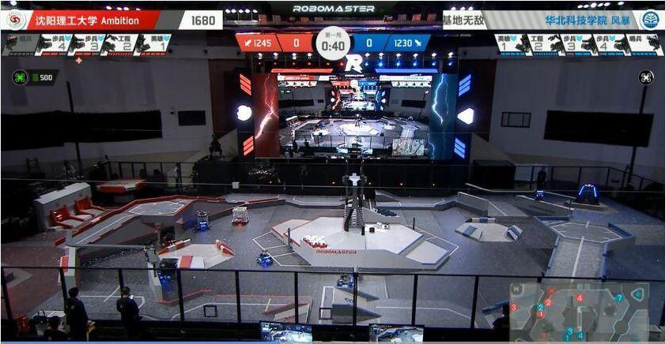

第二局
开局，我方采用激进战术
带走对方一波血量
遗憾的是四号步兵因为超热量而阵亡
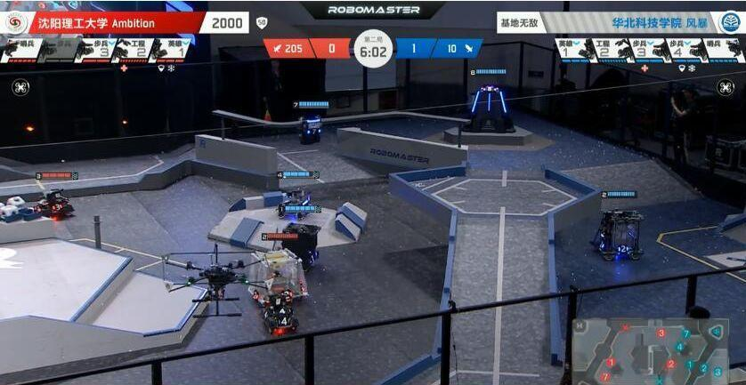
比赛进行到这里
我们依旧占据优势地位
然而对方一波输出带走了我们的哨兵机器人
紧接着我们一波反攻
三号步兵击杀四号步兵
但是很可惜
我们输掉了第二局
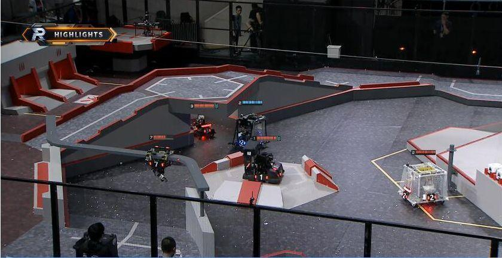
第二场
对战北京理工大学
开局北理工先声夺人
由工程机器人率两辆步兵
将战线推到我方碉堡
双方就碉堡展开争夺
混战中我们击杀对方一辆步兵
立刻转守为攻
我方抓住机会冲击对方基地
无人机也同时发起攻势
成功摸掉15点血量
比赛进行到最后5秒钟
对方一步兵登上桥头
在临死前将我方基地打掉35点血量
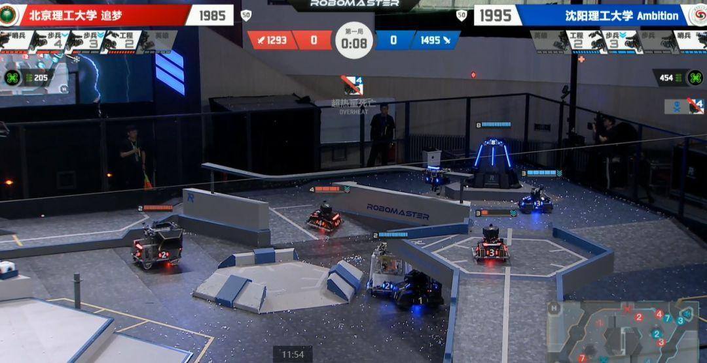
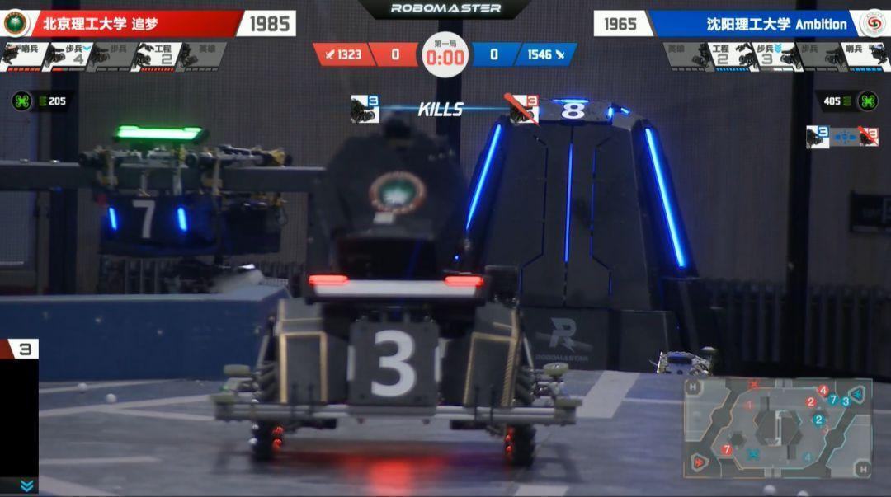
无奈战场瞬息万变！
我方在基地血量上以20点血量的劣势
败下一轮

第二局
开局对方依旧采取先发制人的战术
混战中，对方四号步兵超热量死亡
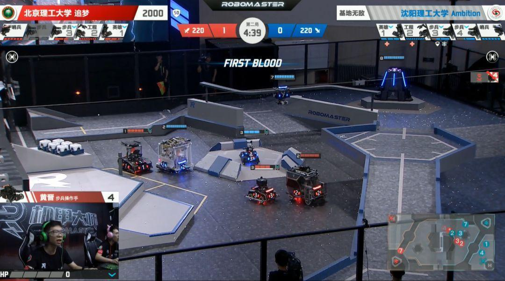
此时对方决定回撤
我方步兵也返回基地补充弹药
片刻过后，双方再次交火
这是我方3号步兵趁机登上对方碉堡
开始猛攻对方哨兵
但遭到了对方工程机器人拦去了退路
形势急转直下
说时迟那时快
我方3号步兵一个转身
从缝隙中脱身而出
成功逃脱战场
可谓“事了拂衣去,深藏功与名”
片刻后
对方便展开反击
此时我方将仅剩一位英雄坚守碉堡
但它成功牵制了敌人的全部战力
我方步兵趁机再次攻击敌方哨兵
成功将其击杀后
敌方的基地便暴露在步兵的枪口之下
最终两局下来
双方战至1：1平

第三局开始
双方都不敢轻举妄动
场面陷入僵持
时间就这样过去了三分钟
就在这时
对方倾巢出动
乱战中
我方英雄不幸阵亡
对方同时在陆上和空中开展攻势
我方基地陷入险境
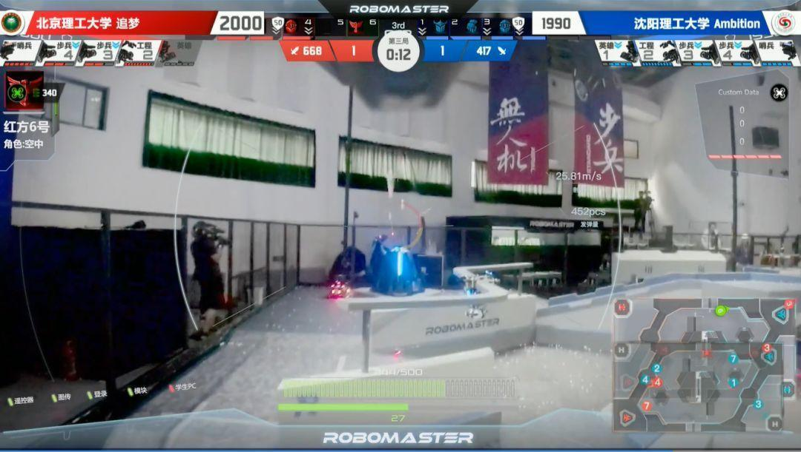
最后敌方无人机将我方基地血量打掉
最终他们拿下了这场比赛
随后我们进入复活赛争夺战
第三场
对战上海科技大学
比赛一开始
对方便急不可耐的展开攻击
我方也快速展开防守阵势
通过围剿成功在一分钟内拿到了一血
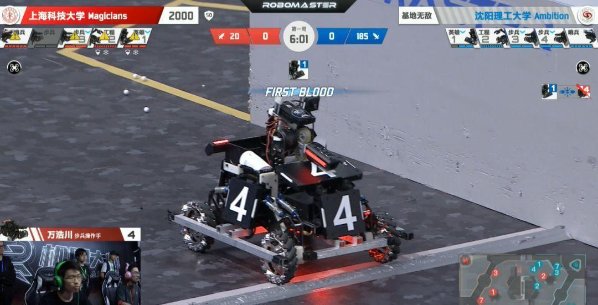
随后我方通过无人机吊射对方基地
奠定了比赛胜利的基础
我方在后期以防御为主
随着时间的流逝，我方将优势逐步扩大
随着一波无人机和步兵的进攻
轻松取得第一场比赛的胜利

第二局上科采用相同的战术开局
由于意外上科4号步兵送了一血
随后我方无人机猛烈输出
成功打掉对方基地血量
上科组织了一波攻击
但被我们击退，并未占到便宜
片刻后我方3号步兵攻打上科哨兵
一波带走上科哨兵
还剩下一分半时
我方的无人机和步兵突破防线
将弹丸清脆打在上科的基地
此时上科已回天无力
只能看我们在他们基地肆意进攻
至此我们成功进入下一轮
第四场
对战华北理工大学

刚开局华北理工两辆步兵率先发起攻击
在占据碉堡的有力地形下
将我方的英雄打成残血
我方英雄在工程的及时掩护下成功逃脱
随后华北理工兵分两路向我方高地进攻
但被我们的无人机击退
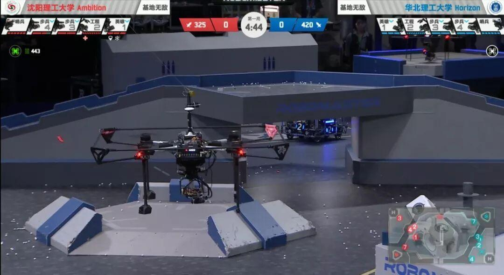
对方稍作调整后
多次对我方哨兵展开进攻
此时我方4号步兵模块离线
对方趁机一举拿下我方哨兵
攻打基地
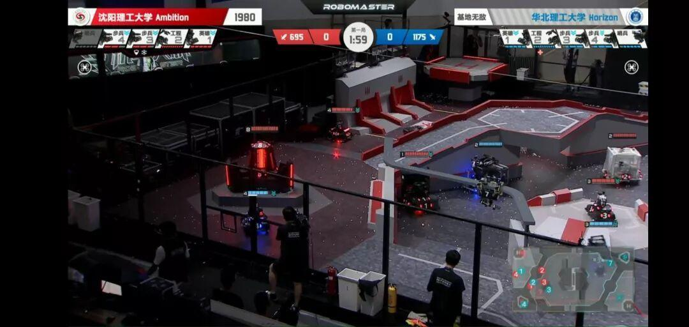
此时
我方无人机也对敌方基地全力打击
但此时双方基地的余血量已天差地别
败下一局

第二局开局对方两辆步兵
直指我方哨兵
由于我方4号步兵仍未恢复
我方火力处于劣势
对方针对我方哨兵开展多次进攻
稍有得手就返回
尽管仅剩的3号步兵坚守碉堡
但无奈火力上的不足
在哨兵被击杀后
对方倾尽所有的火力攻打我方基地
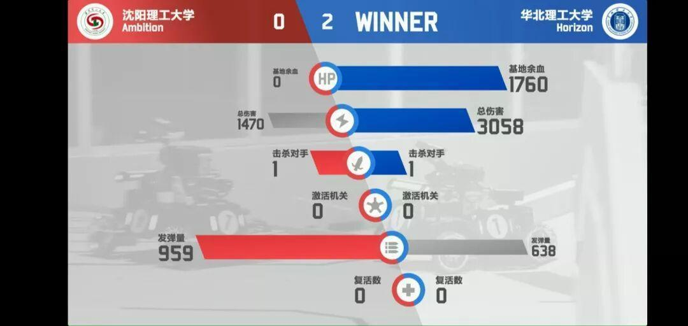
经过两轮败北之后
我们无缘全国复活赛
至此Ambition战队
为自己的征程画上圆满的句号
虽无缘晋级全国赛
但
我们虽败犹荣!
每场比赛的操作都可圈可点
全体参赛成员在比赛中都竭尽全力
每一次出征都是一次挑战和机遇
愿我们在每一次挑战中抓住机遇
去遇见更好的自己
加油！Ambition!
图片：RM官方直播
文字：王颢然
排版：柳博舰